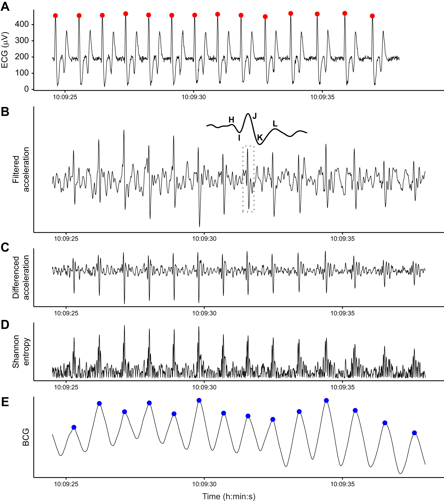

Research
Animal-borne sensors, like GPS and accelerometers, allow remote observation of animal behavior and physiology. As these devices (bio-loggers) accumulate more and more sensors sampling at ever higher frequencies, the deluge of data becomes impossible to interpret with traditional tools. In my research, I develop new methods and software for the analysis and visualization of bio-logging data, with an emphasis on open and reproducible science practices. This page highlights my recent research and future directions.
Physiology

The rumbling of a whale’s heart beat produces a physical waveform (a ballistocardiogram, or BCG), analogous to the more widely known electrocardiogram. I developed a method for extracting the BCG from standard bio-logging sensors (Czapanskiy et al. 2022), advancing our ability to monitor the physiological responses of endangered species to disturbances. I published the BCG method as a research compendium, meaning the data, code, and manuscript are all linked together in an R package available on GitHub.
Behavior

We can now observe extremely fine-scale behaviors with new high-resolution, multi-sensor bio-logging devices. Animal behavior scientists use accelerometers, microphones, and other sensors to identify individual behavioral events such as feeding and social interactions. Manually annotating behaviors in bio-logging data is a critical bottleneck and we lack computational tools for automating the process. I developed a machine learning pipeline, Stickleback, that uses time series classification algorithms to train a behavior detection model. Available in R and Python, currently in review at the Journal of Open Source Software.
Cyberinfrastructure
Like many new types of data, bio-logging lacks common tools and data standards (i.e., cyberinfrastructure). In the absence of these norms, scientists struggle to share and re-use data and code. I analyzed these challenges in bio-logging and described a future cyberinfrastructure solution based on successful efforts in other fields (Czapanskiy and Beltran 2022). My current research includes developing these tools and standards for bio-logging data, as well as educational resources to help bio-logging scientists make their science open and reproducible.